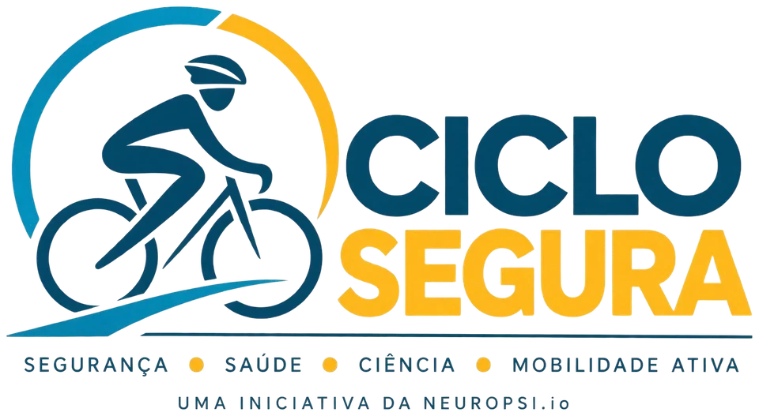

Parceria institucional
Estrutura e alcance
Para quem pode abrir espaço, público ou infraestrutura.
- Espaço físico e totens digitais
- Acesso à comunidade ciclista
- Ações educativas conjuntas
- Campanhas de conscientização
A Ciclo Segura conecta comunidade, saúde, ciência e políticas públicas para construir uma cultura permanente de segurança na mobilidade ativa. O ponto de partida é a Ciclo Rio Pinheiros, em São Paulo.

Em outubro de 2024, João Brito sofreu um grave acidente de bicicleta: múltiplas lesões, nove pinos na coluna, seis dias em coma e respiração por ventilação mecânica. Contra as expectativas, sobreviveu e iniciou uma longa recuperação física e emocional.
Quase um ano depois, ao voltar a pedalar na Ciclo Rio Pinheiros em uma manhã de sábado, presenciou três acidentes em um curto intervalo de tempo. Daquela manhã nasceram quatro perguntas.
Ele impacta a família e gera consequências físicas, emocionais, sociais e econômicas que se estendem por muitos anos. Prevenir não depende apenas de equipamento de proteção ou de cumprimento de norma: segurança é uma construção coletiva, feita de educação contínua, acolhimento, comunidade e evidência científica.
A Ciclo Segura é uma iniciativa social idealizada e coordenada pela NEUROPSI.io, DeepTech sediada no ecossistema de inovação da Universidade de São Paulo, que atua na interface entre neurociência, saúde e tecnologia. Diferentemente de campanhas pontuais, ela foi desenhada para acompanhar a comunidade ciclista ao longo do tempo.
Promover uma cultura permanente de segurança entre quem usa a bicicleta para esporte, lazer ou deslocamento, incentivando autocuidado, responsabilidade coletiva e valorização da vida.
Desenvolver ações educativas, comunitárias e científicas que reduzam riscos, ampliem o acesso à informação e produzam conhecimento capaz de apoiar políticas públicas.
Tornar-se referência nacional na integração entre segurança ciclística, saúde, pesquisa científica e mobilização comunitária.
Uma abordagem integrada em que cada frente fortalece as demais. Nenhuma delas funciona isolada.
Pertencimento, acolhimento e troca entre quem pedala. A base de tudo.
Promoção da saúde física e mental, prevenção e orientação profissional.
Produção de evidências sobre quem pedala, como pedala e com quais impactos.
Conteúdo continuado sobre boas práticas, prevenção de riscos e convivência.
Universidades, hospitais, empresas, marcas e organizações da sociedade civil.
Plataforma digital, cadastro, indicadores e ferramentas de apoio à comunidade.
Conhecimento que retorna à sociedade em forma de decisões mais qualificadas.
O diferencial não está em nenhuma frente isolada, e sim na forma como elas se conectam.
Um ciclo contínuo que conecta comunicação, comunidade, saúde, ciência e políticas públicas.
O Podcast Ciclo Segura, apresentado por Dri Cardoso e João Brito no estúdio da Ciclo Rio Pinheiros, aproxima especialistas, profissionais da saúde, atletas e a própria comunidade.
Mensagens de segurança veiculadas ao longo do percurso, em parceria com a Ciclo Rio Pinheiros, e articuladas com as campanhas nas redes.
O Programa Membro Ciclo Segura organiza uma rede de embaixadores das boas práticas, com identificação e suporte durante o pedal.
Um contêiner na Ciclo Rio Pinheiros como ponto de encontro, cadastro, orientação, acolhimento e ações de saúde com instituições parceiras.
Produção de evidências conduzida pela NEUROPSI.io, em parceria com universidades, hospitais e laboratórios.
O conhecimento acumulado vira recomendação prática e subsídio para políticas públicas de mobilidade ativa.
Levar o modelo, já testado e avaliado, para outras ciclovias e outras cidades.
Cada volta do ciclo devolve à comunidade mais conhecimento do que a anterior.
Cada pessoa percorre um caminho de transformação pessoal e coletiva.
O contêiner na Ciclo Rio Pinheiros é o ponto de encontro da comunidade: cadastro, orientação, acolhimento e promoção da saúde, com estudantes supervisionados e profissionais de instituições parceiras.
A Central Ciclo Segura oferece canais oficiais para comunicar ocorrências e apoiar o contato com familiares previamente cadastrados, sempre de forma complementar aos serviços públicos de emergência.
Existem muitos estudos sobre os benefícios da atividade física, mas ainda são limitadas as pesquisas brasileiras que acompanham de forma longitudinal a saúde de quem usa a bicicleta regularmente. A NEUROPSI.io coordena essa frente em parceria com universidades, hospitais, laboratórios e centros de pesquisa.
A participação nas pesquisas é sempre voluntária e condicionada ao consentimento livre e esclarecido, respeitando os princípios éticos da pesquisa com seres humanos e a legislação de proteção de dados pessoais.
Ser claro sobre os limites da iniciativa é parte de fazê-la bem.
É um conjunto permanente de ações, porque mudança de comportamento acontece por repetição, exemplo e engajamento coletivo.
A Central Ciclo Segura atua de forma complementar aos protocolos existentes, respeitando os limites de atuação da iniciativa.
É uma iniciativa em construção, aberta ao diálogo, ao aperfeiçoamento contínuo e à colaboração entre setores.
Os desafios de segurança, saúde e mobilidade ativa não se resolvem isoladamente. A rede é o método.
Mais do que um registro administrativo, o cadastro é um compromisso simbólico e coletivo com a valorização da vida. Cada membro passa a integrar uma rede de embaixadores das boas práticas no ciclismo.
A entrada na comunidade Ciclo Segura, com acesso a conteúdos, campanhas e ações educativas.
Uma identificação vinculada ao programa e, futuramente, um número exclusivo associado à sua bicicleta.
Mediante consentimento expresso e em conformidade com a LGPD: contatos de familiares, condições de saúde, medicamentos de uso contínuo e alergias.
O cadastro é voluntário e gratuito. Nenhum dado de saúde é coletado sem consentimento expresso.
Cada parceiro contribui dentro de sua área de especialidade. A iniciativa busca um modelo sustentável com fontes diversificadas de apoio: patrocínios institucionais, editais públicos e privados, programas de incentivo à pesquisa, doações e a futura loja oficial.
Para quem pode abrir espaço, público ou infraestrutura.
Para empresas, marcas esportivas, seguradoras e fabricantes.
Para universidades, hospitais, laboratórios e clínicas.
Categorias de parceiros previstas no projeto. As parcerias são construídas de forma gradual, respeitando a identidade e as diretrizes de cada instituição.
Não. O cadastro no Programa Membro Ciclo Segura é voluntário e gratuito.
A Ciclo Rio Pinheiros é o ponto de partida da iniciativa, por reunir diariamente pessoas com diferentes perfis de uso da bicicleta. A intenção declarada do projeto é replicar o ecossistema para outras ciclovias conforme ele amadurece.
Não. A participação em qualquer pesquisa é sempre voluntária e condicionada ao consentimento livre e esclarecido, respeitando os princípios éticos da pesquisa envolvendo seres humanos.
As informações de emergência só são coletadas mediante consentimento expresso e em conformidade com a legislação de proteção de dados pessoais. Elas existem para facilitar a comunicação e o acolhimento em momentos críticos, não para substituir protocolos de emergência.
Não. A Central Ciclo Segura pode auxiliar no contato com familiares previamente cadastrados e orientar procedimentos iniciais, mas atua sempre de forma complementar aos serviços públicos de emergência.
Pelo contato direto. A iniciativa está em construção e as formas de apoio são definidas em conjunto, a partir do que cada organização pode contribuir.
A Ciclo Segura é uma iniciativa em construção. As etapas dependem do estabelecimento de parcerias e da obtenção dos recursos necessários para cada frente. Fale com a equipe para saber o estágio atual.